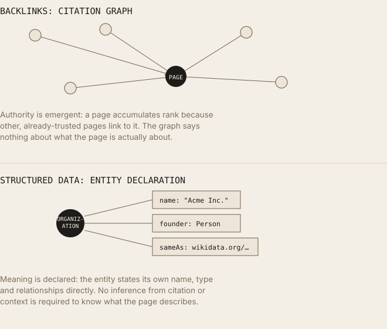

Structured Data Is the New Backlink? Why Schema Matters More in AI Retrieval
Schema as a trust signal for agentic retrieval, and where the claim holds up versus where it's getting ahead of the evidence.
Executive Summary
Backlinks became SEO's foundational currency because PageRank, Google's original ranking algorithm, modeled the web as a citation graph: a link was a vote, and votes from already-trusted pages counted more. That model rewards authority. It says nothing about whether a system correctly understands what a page is about. Structured data, Schema.org markup expressed as JSON-LD, Microdata, or RDFa, solves a different problem: it removes ambiguity about what an entity is, what type of content a page contains, and how pieces of content relate to each other. Google has stated plainly, repeatedly, that structured data is not a general ranking factor. It has also confirmed, separately, that structured data is served as context to its own AI Overviews and AI Mode systems at query time. Microsoft has confirmed something similar for its own systems. OpenAI, Anthropic, and Perplexity have not made equivalent public statements, and independent testing has found no measurable correlation between schema coverage and citation rates on those platforms. The honest claim is narrower than "the new backlink": structured data is a comprehension aid with confirmed value on the two search platforms that have said so, and unconfirmed, plausible-but-untested value everywhere else.
Introduction
Backlinks became the foundation of SEO because early Google ranking was, mechanically, a link-counting system. Larry Page and Sergey Brin's 1998 paper on PageRank framed the idea directly: web citations extend academic citation analysis, using backlinks as an approximation of a page's importance, and improving on simple counting by weighting links from already-important pages more heavily. A link was evidence that someone, somewhere, judged a page worth pointing to, and Google's founders explicitly treated anchor text as an additional relevance signal, since the words used to link to a page often described that page better than the page described itself.
That system optimizes for one thing: perceived authority as expressed through citation. It has no mechanism for verifying that a page's content is accurate, well-organized, or unambiguous about what it's describing, a highly-linked page about "Mercury" gives no direct signal to a ranking system about whether it means the planet, the element, or the car brand. AI retrieval systems, by contrast, need to solve exactly that problem before they can ground an answer: what entity is this, what type of content is it, how does it relate to other entities. Structured data was purpose-built for that job years before generative AI search existed. This article separates what's actually documented about structured data's role in AI retrieval from what's inferred, assumed, or asserted without evidence, including by Google itself, whose own guidance is more layered than a single soundbite suggests.
What Is Structured Data?
Structured data, in the web-publishing sense, is machine-readable metadata embedded in a page that explicitly labels what the page's content represents, as distinct from the visible HTML, which is written for human readers and requires inference to interpret programmatically.
Schema.org is a shared vocabulary, jointly maintained by Google, Microsoft, Yahoo, and Yandex since 2011, that defines standardized types (Organization, Article, Product, and hundreds more) and properties for describing entities and their relationships in a way multiple search engines can consume without custom parsing per site.
JSON-LD (JSON for Linking Data) is a script-tag-embedded, W3C-recommended serialization format that expresses Schema.org (or any RDF-compatible) data as a self-contained block, separate from the visible page markup. Google's own documentation recommends JSON-LD as the preferred format.
Microdata embeds the same kind of markup as HTML attributes (itemscope, itemprop) directly within the visible content elements, so the data annotation and the display markup are the same nodes.
RDFa (Resource Description Framework in Attributes) is a W3C specification for embedding RDF triples as HTML attributes, commonly used in both <head> and <body>.
Entities, relationships, and knowledge graphs carry the same meaning here as in general information-retrieval usage: an entity is a distinct real-world thing; a relationship connects two entities (Organization → founder → Person); a knowledge graph is the structured network of both.
The core distinction: raw HTML describes how content should be displayed to a human. Structured data describes what the content is, independent of display, a <h1> tag says "make this text large," while a JSON-LD Organization block with a name property says "this string is the legal name of a company entity." Ranking and retrieval systems that want to reason about entities benefit from not having to reverse-engineer that meaning from visual formatting.
Why Backlinks Dominated Traditional SEO
PageRank, published by Page and Brin in "The Anatomy of a Large-Scale Hypertextual Web Search Engine" (1998), modeled page importance recursively: a page's rank is a function of the rank of the pages linking to it, divided by how many other outbound links each of those pages contains. The core formula:
PR(A) = (1 - d) + d × (PR(T1)/C(T1) + ... + PR(Tn)/C(Tn))where d is a damping factor, and T1...Tn are the pages linking to A, each contributing their own rank divided by their outbound link count C(Tn).
Anchor text received special treatment from the start. Page and Brin's paper describes associating a link's visible text not just with the linking page but with the target page, on the reasoning that anchor text often summarizes a target page's content more concisely and reliably than the page's own text.
Authority and trust, in this model, are emergent properties of the link graph rather than directly assigned, a page accumulates authority by being cited by pages that already have it, similar to academic citation-count metrics.
Link equity is the informal SEO term for the portion of a page's accumulated PageRank passed to pages it links to; in Google's 2004 "reasonable surfer" patent update, this was refined further so that links a real user would be more likely to click (based on placement, formatting, and context) pass proportionally more weight than links a user would likely ignore.
Why this became the dominant optimization target: unlike content quality, which is hard to measure programmatically, links are countable, and PageRank made that count operationally central to whether a page could be found at all. This produced two decades of link-building as a discipline, guest posts, directory submissions, PR outreach, all aimed at accumulating the one signal early Google could measure directly.
The limitation, stated precisely: link graphs measure citation, not comprehension. A backlink says a page was judged worth linking to; it says nothing about what specific entity, product, or claim the page accurately represents. Two pages can have identical backlink profiles while one correctly identifies its subject and the other is ambiguous or wrong about it, PageRank alone cannot distinguish them.
Why AI Systems Need Structured Information
Retrieval-augmented generation and grounded AI answers depend on stages that link-graph authority doesn't address:
- Entity extraction, identifying which real-world things a passage discusses, independent of its citation profile.
- Knowledge graph lookup, cross-referencing extracted entities against structured facts (Google's Knowledge Graph, Wikidata) that exist outside any single document.
- Grounding, supplying a generation model with context that is unambiguous about what it describes, reducing the model's inferential burden.
- Chunk retrieval, modern systems retrieve paragraph- or section-sized spans, not whole pages; a chunk-level
FAQPageorHowToblock with explicit question/answer or step structure maps directly onto that retrieval unit in a way that undifferentiated prose does not. - Semantic understanding, embeddings encode meaning from surrounding context, and explicit entity and type declarations reduce the ambiguity that context has to resolve on its own.
- Disambiguation, a
sameAslink to a Wikidata or Wikipedia identifier resolves a name directly to a specific knowledge-base node, the same disambiguation problem discussed in entity-resolution research generally. - Machine-readable relationships, Schema.org properties like
author,publisher, andaboutstate relationships explicitly (this Article was written by this Person, is about this Organization) rather than requiring a system to infer them from adjacency or phrasing.
None of this implies structured data is a ranking mechanism analogous to PageRank. It's a comprehension layer that operates upstream of ranking and retrieval decisions, the question it answers is "what is this," not "how important is this."

One measures citation. The other declares meaning. They answer different questions.Does Schema Help AI Systems?
This is the section where documented fact, vendor confirmation, and industry speculation diverge sharply, and where precision matters most.
Google, documented, and more nuanced than a single line:
- Google's Search Central guidance states directly that structured data by itself is not a generic ranking factor, and has repeated this position consistently since at least 2018, when John Mueller stated on record there is no general ranking boost from using structured data.
- Separately, and specific to generative features, Google has confirmed that structured data is served as context to its AI Overviews and AI Mode systems at query time, a statement about retrieval/grounding input, not about ranking position.
- Google's official position on structured-data violations reinforces the same distinction from the other direction: a structured-data manual action removes a page's eligibility for rich results, but explicitly does not affect how the page ranks in web search.
These are three separate, consistent claims, not a contradiction: no ranking effect, but a confirmed grounding-input role in Google's own generative surfaces.
Microsoft/Bing, documented, narrower scope: Bing's Fabrice Canel has publicly confirmed that structured data helps Bing's systems, including Copilot, understand page content, a direct vendor confirmation, though the specific mechanics of how that understanding translates into citation likelihood have not been published in comparable technical detail to Google's Knowledge Graph documentation.
OpenAI, Anthropic, Perplexity, not documented: None of these three has published a statement confirming that its crawlers or retrieval pipelines parse Schema.org markup, JSON-LD, or any other structured-data format as a distinct input from visible page text. This is a documented absence, not evidence of absence, but it means claims that "ChatGPT uses your schema" or "Claude reads your JSON-LD" go beyond what any primary source states.
Cloudflare: No public Cloudflare statement claims involvement in parsing or prioritizing structured data for AI retrieval; Cloudflare's public work in this space (AI bot management, Workers-based content delivery) concerns crawler traffic management, not content interpretation, and shouldn't be conflated with the structured-data question.
A real technical constraint worth stating plainly: independent analysis has pointed out that many LLM retrieval pipelines convert web pages to plain text or Markdown before the model reads them, a conversion step that can strip <script> tags, including JSON-LD, entirely. Pipelines that instead feed raw HTML through a tokenizer may expose the JSON-LD text to the model, but as ordinary text tokens rather than as parsed, structured properties the model treats specially. Whether a given third-party AI platform's specific pipeline preserves, parses, or discards JSON-LD is, in the absence of a published statement from that platform, genuinely unknown rather than something this article can responsibly assert either way.
Independent measurement: A December 2024 analysis (Search Atlas) examined citation behavior across OpenAI, Gemini, and Perplexity and found no correlation between schema markup coverage and citation rates, sites with comprehensive schema did not consistently outperform sites with minimal or none. This is one study, not a settled literature, and should be weighted accordingly, but it is the most direct empirical test available on the specific question this article opened with.
Structured Data vs. Backlinks
| Dimension | Backlinks | Structured Data |
|---|---|---|
| Authority | Directly modeled, PageRank's core function | Not modeled at all, Schema.org has no authority concept |
| Trust | Emergent from citation graph (who links to whom) | Not established by schema itself; Google explicitly ties trust to spam policies, not markup |
| Understanding | None, a link says nothing about content accuracy or meaning | Direct, explicitly labels entity type and properties |
| Entity recognition | Indirect, via anchor text only | Direct, @type, name, sameAs explicitly declare entity identity |
| Grounding (for AI) | Not applicable, link graphs aren't consumed as generation context | Confirmed input for Google AI Overviews/AI Mode; unconfirmed for OpenAI/Anthropic/Perplexity |
| Semantic clarity | Anchor text provides limited disambiguation | Purpose-built for disambiguation via typed properties |
| Citation potential (AI) | No documented mechanism connecting backlinks to AI citation directly | Documented for Google/Bing surfaces; no measured correlation found for OpenAI/Gemini/Perplexity in available independent testing |
| Machine readability | Requires crawling and graph traversal to interpret | Directly parseable as structured key-value data, no inference required |
| Knowledge graph alignment | Indirect, entities may accrue Knowledge Graph presence through broader signals, not links specifically | Direct, sameAs links a page's entity straight to a Knowledge Graph/Wikidata node |
| Retrieval confidence | Not a retrieval input in RAG-style systems | Plausibly reduces ambiguity for entity linking, though the effect is not independently measured for third-party AI platforms |
| Ranking effect (Google Search) | Historically central and still a meaningful signal among many | Explicitly and repeatedly denied by Google as a general ranking factor |
| Gaming risk | High, link schemes are a long-standing manual-action category | Present but narrower, mismatched or fabricated schema risks rich-result removal, not a ranking penalty, per Google's stated policy |
Where backlinks still outperform schema, unambiguously: general Google Search ranking. No primary source suggests structured data has displaced or rivals backlinks as a ranking input for standard organic results.
Where schema has a documented advantage: removing ambiguity about content type and entity identity for systems that consume it, confirmed for Google's generative surfaces and Bing, unconfirmed but mechanistically plausible elsewhere.
Which Schema Types Matter Most?
- Organization, legal name,
sameAslinks to Wikidata/official profiles; resolves company-name ambiguity that free text leaves to inference. - Person, name, role, affiliations,
sameAsidentity links; disambiguates individuals, especially those sharing names with others. - Article,
author,datePublished,about; explicitly connects content to the entities it covers rather than leaving topic identification to text analysis alone. - WebPage, establishes the page itself as an entity with a type, useful as a container for more specific markup.
- FAQPage, question/answer pairs marked as discrete, extractable units; Google has documented this type specifically as eligible for direct display in search features, and its structure maps naturally onto chunk-based retrieval regardless of platform.
- HowTo, sequential, numbered steps marked explicitly; useful for procedural content where a system needs to know the correct order, not just that steps exist.
- Product, brand, identifiers (SKU/GTIN), pricing, availability; core to Google's Merchant/Shopping ecosystem and disambiguates same-named products.
- SoftwareApplication, name, version, operating system, category; resolves collisions between software names and unrelated entities.
- Dataset, explicit provenance and subject declarations; Google indexes this type specifically through Dataset Search.
- Book, author, ISBN, publisher; standard bibliographic disambiguation.
- Review / AggregateRating, subject of review, rating value, review count; Google's guidelines are notably strict here about only marking up genuine, visible review content, given historical abuse.
- VideoObject, duration, upload date, thumbnail; required for video-specific rich result eligibility.
- LocalBusiness, geographic and category identity; disambiguates businesses sharing names across locations.
- MedicalEntity (and its subtypes), used with particular caution given YMYL (Your Money or Your Life) content-quality scrutiny; accuracy requirements are stricter, and Google's guidelines for health content emphasize this explicitly.
- EducationalOrganization, accreditation, program, and institutional identity markup, useful for disambiguating institutions with similar names.
Each of these helps machines interpret content by replacing inference with explicit declaration, the same mechanism, applied to a different type each time: state directly what free text would otherwise require a model to guess.
Real Examples
Before, plain HTML, entity identity left to inference:
<h1>About Us</h1>
<p>Founded in 2019, we build tools for backend engineers.
Our founder previously worked at a major payments company.</p>A parser sees an H1 and two sentences. It does not know the organization's name, cannot resolve "we," cannot resolve "our founder" to a named entity, and cannot resolve "a major payments company" to anything at all.
After, structured HTML plus JSON-LD:
<h1>About Northbridge Systems</h1>
<p>Founded in 2019, Northbridge Systems builds tools for backend engineers.
Founder Priya Raman previously worked at Stripe.</p>
<script type="application/ld+json">
{
"@context": "https://schema.org",
"@type": "Organization",
"name": "Northbridge Systems",
"foundingDate": "2019",
"founder": {
"@type": "Person",
"name": "Priya Raman",
"sameAs": "https://www.linkedin.com/in/priyaraman-example"
},
"sameAs": [
"https://en.wikipedia.org/wiki/Northbridge_Systems_(example)"
]
}
</script>How machine understanding changes: the organization now has an explicit name property rather than a pronoun; the founder is a distinct Person entity, linked rather than described in prose alone; both carry sameAs identifiers resolving them to external, verifiable references. A system doing entity resolution has zero inferential work left to do for these two facts, it has them declared directly. This is a measurable reduction in ambiguity at the markup level; whether any specific third-party AI platform's retrieval pipeline actually reads that JSON-LD block is the separate, unresolved question this article has already addressed directly and will not overstate here.
Common Misconceptions
- "Schema improves rankings." Incorrect, per Google's own repeated, direct statements. Structured data affects rich-result eligibility, not organic ranking position.
- "Schema guarantees citations." Incorrect. Even on Google's confirmed AI surfaces, structured data is one context input among several, not a guarantee; on OpenAI, Anthropic, and Perplexity, no confirmed mechanism exists at all, and independent testing has found no citation-rate correlation.
- "Schema replaces backlinks." Incorrect. They solve different problems, backlinks are a documented ranking signal; schema is a partially documented comprehension aid. Removing backlink-building in favor of schema markup would abandon a confirmed lever for an unconfirmed one on most platforms.
- "Schema replaces content." Incorrect and structurally impossible, Schema.org markup describes content that must already exist and be visible on the page; Google's guidelines explicitly prohibit marking up content that isn't visible to readers.
- "Schema replaces internal linking." Incorrect. Internal linking distributes crawl equity and establishes site architecture; schema declares entity properties. A page can have perfect JSON-LD and be functionally unreachable if it's not internally linked or included in a sitemap.
Practical GEO Checklist
- Implement
Organizationschema withsameAslinks to Wikidata and/or Wikipedia, if an entry exists. - Implement
Personschema for every named author, withsameAslinks to a verifiable professional profile. - Use JSON-LD, not Microdata or RDFa, unless a specific platform requirement dictates otherwise, it's Google's stated preference and easiest to maintain independent of visible markup.
- Ensure every fact in your JSON-LD is also visible in the page's rendered content, Google's guidelines require this explicitly, and it's good practice regardless of platform.
- Mark up genuine FAQ content with
FAQPage, using real, visible question/answer pairs. - Use
HowToonly for genuinely sequential, step-based content, not general advice reformatted into fake steps. - Declare
SoftwareApplicationproperties precisely: name, version, operating system, category, resolving naming collisions explicitly. - Mark up
Datasetentities for any downloadable or structured data you publish, to be eligible for Dataset Search. - Keep entity names internally consistent across every page, don't alternate between "Acme," "Acme Corp," and "Acme Corporation" without declaring equivalence.
- Use
authorandpublisherproperties on everyArticle, connecting content to accountable, named entities. - Never fabricate
RevieworAggregateRatingmarkup, Google's spam policies treat this as a high-severity violation, and it undermines trust signals more than it fabricates them. - Validate every implementation with Google's Rich Results Test before publishing.
- Don't block structured-data-bearing pages via robots.txt or
noindexif rich-result eligibility matters to you, Google's guidelines state this explicitly. - Prioritize
OrganizationandPersonschema first, these are identity-layer types that other schema (Article, Product, Review) depends on forauthorandpublisherrelationships. - Add
dateModifiedalongsidedatePublishedon time-sensitive content, freshness is a documented factor independent of, and additive to, entity clarity. - Treat structured data as one layer of an entity strategy, not a standalone lever, pair it with the disambiguating, explicit prose entity-resolution work described in complementary GEO research.
- Don't assume any specific third-party AI platform parses your JSON-LD, build it for the platforms that have confirmed using it (Google, Bing), and treat any effect elsewhere as an unconfirmed bonus, not a target metric.
- Use
knowsAboutandsameAstogether onOrganizationandPersontypes to strengthen topical and identity disambiguation simultaneously. - Re-audit schema after any content or site-structure change, stale or mismatched markup (for example, JSON-LD describing content no longer present) risks the exact manual-action penalty Google's guidelines describe.
- Don't chase exotic Schema.org types with no clear content match, Google documents and supports roughly 30 of the vocabulary's 800-plus types for search features; implement precisely, not exhaustively.
Future Outlook
Three trajectories are underway, stated with the uncertainty each deserves:
AI agents and machine-readable interaction. Anthropic's Model Context Protocol (November 2024) and Google/Microsoft's WebMCP (public origin trial from Chrome 149, May 2026) both point toward AI systems interacting with structured, declared capabilities rather than inferring them from HTML or JSON-LD alone. These are runtime interaction protocols, not content-markup formats, and shouldn't be conflated with Schema.org, but a website that already thinks in explicit entities and relationships is better positioned to adopt either, since the underlying discipline (declare what you are, explicitly, rather than relying on inference) is the same.
Knowledge graph growth. Continued expansion and cross-linking of open knowledge bases (Wikidata, DBpedia) alongside proprietary ones (Google's Knowledge Graph) plausibly lowers the barrier for smaller organizations to achieve entity resolution via sameAs links, without needing proprietary infrastructure. This is an observed trend in tooling and standards adoption, not a specific vendor roadmap commitment.
Multimodal and agentic search. As retrieval expands beyond text into image, video, and multi-step agentic tasks, structured metadata (image and video-specific Schema.org types, explicit relationship declarations) plausibly becomes more, not less, relevant, since inference from unstructured visual content is harder than inference from unstructured text. This is a reasonable extrapolation from current architecture trends, not a documented finding about any specific production system's roadmap.
What would need to happen for the "new backlink" framing to become literally accurate: at minimum, a public confirmation from OpenAI, Anthropic, or another major AI platform that structured data functions as a distinct, weighted retrieval or citation input, comparable to what Google and Bing have already confirmed for their own systems. That confirmation does not currently exist.
Key Takeaways
- PageRank modeled authority through link citation; it has no mechanism for verifying content accuracy or resolving entity ambiguity.
- Google has stated repeatedly, since at least 2018, that structured data is not a general ranking factor.
- Google has separately confirmed that structured data is served as context to its AI Overviews and AI Mode systems, a grounding-input claim, distinct from and not contradicting the ranking claim.
- Microsoft/Bing has confirmed structured data helps its systems, including Copilot, understand content.
- OpenAI, Anthropic, and Perplexity have not published equivalent confirmations; claims that these platforms use your schema go beyond documented evidence.
- Independent testing (Search Atlas, December 2024) found no correlation between schema coverage and citation rates across OpenAI, Gemini, and Perplexity.
- A real technical constraint exists: some LLM retrieval pipelines strip JSON-LD
<script>tags during HTML-to-text conversion, meaning the markup may never reach the model regardless of platform intent. - Structured data's confirmed value is comprehension, not authority, it doesn't compete with backlinks, it solves a different problem backlinks were never designed to solve.
Organization,Person,Article, andFAQPageare the highest-leverage types for identity and content-type disambiguation, based on Google's own documented feature support.- The "structured data is the new backlink" framing overstates current evidence; the accurate claim is narrower: schema is a confirmed comprehension layer for two major platforms, and a plausible, unconfirmed one elsewhere.
Glossary
- Structured data
- Machine-readable metadata that explicitly labels page content's meaning, independent of visual HTML formatting.
- Schema.org
- A shared, cross-engine vocabulary of types and properties for structured data, maintained by Google, Microsoft, Yahoo, and Yandex.
- JSON-LD
- A script-tag-based, W3C-recommended serialization format for structured data, separate from visible page markup.
- Microdata
- A structured-data format embedded as HTML attributes within visible content elements.
- RDFa
- A W3C specification for embedding RDF triples as HTML attributes.
- PageRank
- Google's original link-based algorithm for estimating page importance via recursive citation weighting.
- Link equity
- The informal term for the portion of accumulated authority a page passes to pages it links to.
- Rich result
- A visually enhanced Google Search result made eligible by valid structured data of a supported type.
- sameAs
- A Schema.org property linking an entity to an external identifier (Wikidata, Wikipedia, official profile), used for disambiguation.
- Knowledge Graph
- A structured network of entities and relationships; both Google's proprietary system and open equivalents (Wikidata, DBpedia) serve this function.
FAQ
Should I stop building backlinks and focus on schema instead?
No. Backlinks remain a documented, confirmed factor in Google's general ranking system. Structured data solves a different, comprehension-layer problem and should be additive, not a replacement.
Does adding schema guarantee my content gets cited by ChatGPT?
No. No primary source from OpenAI confirms schema parsing, and independent testing found no citation-rate correlation with schema coverage across OpenAI, Gemini, and Perplexity.
Is JSON-LD better than Microdata for AI retrieval specifically?
Unknown for AI platforms other than Google and Bing. For Google Search, JSON-LD is the explicitly recommended and preferred format.
Can bad schema hurt my rankings?
Google's documentation states structured-data violations result in loss of rich-result eligibility via manual action, not a ranking-position penalty, though severe, widespread spam violations could separately trigger broader spam-policy consequences unrelated to schema specifically.
References
- Brin, S., and Page, L., "The Anatomy of a Large-Scale Hypertextual Web Search Engine," Computer Networks and ISDN Systems, 1998
- Google, "General structured data guidelines," Google Search Central developer documentation
- Google, "Introduction to structured data markup in Google Search," Google Search Central
- Google, "Enriched search results," Google Search Central
- Google Search Central Blog, "Rich Results and Search Console FAQs," August 11, 2020
- Search Engine Roundtable, coverage of Google statements on structured data and ranking, 2023 to 2025
- Search Engine Land, "How schema markup fits into AI search, without the hype," covering Bing's March 2025 confirmation via Fabrice Canel and Google's April 2025 statement on AI Overviews context use
- Schema.org, type and property documentation
- W3C, JSON-LD 1.1 specification; RDFa Core specification
- Search Atlas, citation-behavior analysis across OpenAI, Gemini, and Perplexity, December 2024